Spuren der Wikinger in aller Welt
Spuren der Wikinger in aller Welt - Letztes Update - Schweden - Birka 20.08.2024 / Visby 10.09.2024 / Stockholm 10.09.2024
Die Züge der Wikinger ins Frankenreich nehmen kurz vor dem Jahr 800 ihren Anfang. Bis zur Gründung der Normandie durch den Vertrag von Saint-Claire-sur-Epte am 11.Juli 911, der zwischen dem französischen König Karl III. der Einfältige und Rollo (ca. 846-932) geschlossen wurde, gab es nahezu ununterbrochen Angriffe kleinerer oder größerer Wikingerverbände auf das Frankenreich. Dabei kam es zu Angriffen und Verwüstungen z.B. in Mont Saint Michel, Rouen, Bayeux, aber auch in Chartres.
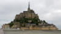
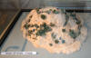
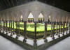
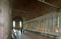
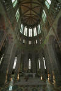
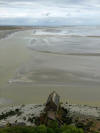
Glasfenster im nördlichen Chor der Kathedrale von Chartres. Im rechten der beiden komplett dargestellten Fenster zeigt die Szene in der linken unteren Ecke wohl den Bau einer hölzernen Stabkirche (Satteldach mit Sparrenkonstruktion). Auf dem Detailfoto, bzw. der zeichnerischen Abbildung, ist dies eigentlich gut zu erkennen. Das Fenster ist aus der Zeit um 1220. Die Szene zeigt in wesentlichen Details eine auffallende Ähnlichkeit mit einer norwegischen Stabkirchen aus der gleichen Zeit.
Die Zeichnung habe ich dem Buch "Die frühen Holzkirchen Europas" von Claus Ahrens, Theiss Verlag, 2001, Seite 175, entnommen. Sie stammt ursprünglich aus einem Aufsatz von G. Binding, 1987, Darstellung einer Stabkirche in Chartres.
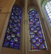
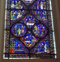
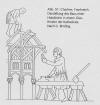
Kathedrale Notre-Dame in Bayeux. Das Ausschnittfoto zeigt im Kirchenschiff einen Gewölbezwickel aus dem 19. Jahrhundert mit der 23. Szene aus dem Teppich von Bayeux, der Eid von Harold.
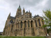
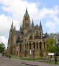
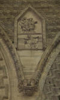
Museum mit dem Teppich von Bayeux und einige Ausschnitte daraus. Das erste Foto zeigt die Szene 32 mit dem Halleyschen Kometen, der im April 1066 in England tatsächlich wohl klar zu sehen war. Mitte Mai kam er wieder außer Sicht.
Der Teppich von Bayeux, der wie ein Wunder die Jahrhunderte nahezu unbeschadet überdauert hat, ist ein einmaliges Kunstwerk und historisches Dokument. Über nahezu 70 m Länge und ca. 50 cm Höhe zeigt diese Wollstickerei auf Leinen die Eroberung Englands durch Wilhelm den Eroberer im Jahre 1066. Der Teppich von Bayeux entstand wohl um 1070-1080 im Auftrage des Bischofs von Bayeux, einem Halbbruder von Wilhelm dem Eroberer, in der Grafschaft Kent.Vielleicht wurde er zur feierlichen Einweihung der Kathedrale von Bayeux, am 14. Juli 1077, erstmals ausgestellt.
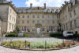
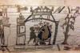
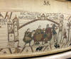
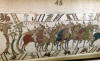
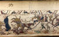
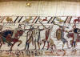
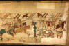
Wilhelm der Eroberer, der Herzog der Normandie und ab 1066 auch König von England, ließ in Caen um 1050 eine Burg bauen und wählte die Stadt als Hauptachse seiner Politik. Ab 1050 ließ er eine Abtei für Frauen (Abbaye aux Dames) und eine für Männer erbauen (Abbaye aux Hommes). Seine Frau Mathilde ist in der Abbaye aux Dames begraben, während er seine letzte Ruhe in der Abbaye aus Hommes fand.
Die Abbaye aux Dames, das um 1130 eingezogene Kreuzrippengewölbe und die Grabplatte von Mathilde, Gemahlin von Wilhelm dem Eroberer, aus schwarzem Tournai Marmor.
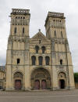
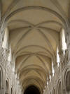
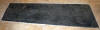
Die Abbaye aux Hommes, das ab 1120 eingebauteKreuzrippengewölbe und das Grab von Wilhelm dem Eroberer.
Übersetzung der Grabinschrift von Wilhelm dem Eroberer: "Hier begraben ist der unbesiegbare Wilhelm der Eroberer Herzog der Normandie und König von England der Begründer dieses Hauses der im Jahre 1087 verstorben ist." Diese Grabplatte ist von 1802, nachdem das Grab in den Wirren der Geschichte mehrfach zerstört wurde.
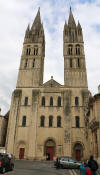
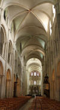
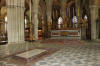
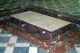
Die Kathedrale von Rouen, ehemals Hauptstadt der Normandie unter Rollo ab 911. Das darin befindliche Grab von Rollo, der im Jahre 933 verstarb, zeigt allerdings eine viel später entstandes Aussehen. In der Kathedrale von Rouen findet sich u.a. auch das Grab seines Sohnes, Herzog Wilhelm Langschwert, der 942 getötet wurde.
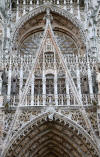
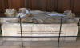
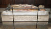
Die Abteikirche Saint Quen in Rouen. In dem sie umgebenden Park ist eine Statue von Rollo zu sehen, die vom Bildhauer Arsene Letellier 1863 geschaffen und im Jahre 1865 in Rouen aufgestellt wurde.
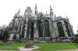
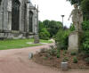
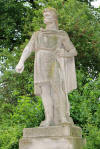
In Sichtweite von Rollo findet sich eine originale Kopie des großen Runensteins von Jelling. Diese Kopie wurde der Stadt Rouen im Jahre 1911, anlässlich der 1000-Jahrfeier der Normandie, von der dänischen Carlsberg Stiftung aus Kopenhagen zum Geschenk gemacht.
Das Historische Museum in Oslo - Die Wikingerausstellungen zeigen u.a. den bestbewahrten Wikingerhelm der Welt (Der Gjermundbu Helm aus Eisen, 1943 in einem Grabhügel gefunden), zahlreiche Schwerter, Schmuck, Werkzeuge und Zeugnisse ihres Glauben.
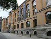
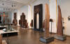
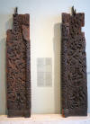
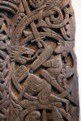
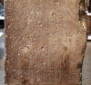
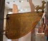
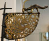
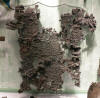
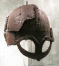
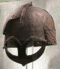
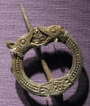
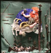
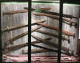
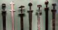
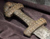
Das Wikingerschiffsmuseum in Oslo zeigt die besterhaltensten Wikingerschiffsfunde weltweit.
Hier das berühmte Osebergschiff, das 1904 unter einem Grabhügel im westlichen Oslofjord, zwischen Tønsberg und Horten, gefunden wurde und als Grablege für zwei Frauen diente. Es ist der mit Abstand reichste und wichtigste Fund aus der Wikingerzeit.
Im Internet findet sich zum Osebergschiff (in englischer Sprache) diese Abhandlung mit alten, historischen Aufnahmen.
Die sterblichen Überreste der beiden bestatteten Frauen, die verschiedenen Schlittenfunde, die als riesiges Puzzle mühsam zusammengesetzt werden mussten, einige herausragende Schnitzereien und eine Truhe, wie sie den Seeleuten vielleicht als Ruderbank diente.
Der Wagen aus dem Osebergfund mit den vier menschlichen Köpfen, die sich an den vier Enden der Wangen der Wagenkastenhalterung befinden.
Im Grabfund des Osebergschiffes fanden sich auch vier aus Holz geschnitzte Tierkopfpfosten, mit unklarer Verwendung. Hier der Tierkopfpfosten des "Akademikers", vermutlich aus Ahornholz.
Der Tierkopfpfosten des "Barockmeisters"
Der Tierkopfpfosten des 2. "Barockmeisters"
Der "karolingische" Tierkopfpfosten.
Das Gokstadschiff, ein hochseetüchtiges Wikingerschiff aus dem 9. Jahrhundert, das im Jahre 1880 unter einem Grabhügel auf dem Bauernhof Gokstad bei Sandefjord gefudnen wurde. Es ist 23,33 m lang und 5,25 m breit und vollständig aus Eiche gebaut. Vom Kiel bis zur Bordwand hatte es eine Höhe von 1,95 m. Der Tiefgang betrug wohl Es fand sich eine aufwändige Grabkammer, eine umfangreiche Grabausstattung und drei kleinere Beiboote.
Das Tune-Schiff das 1867 im Grabhügel Båthaugen in Rolvsøy; Østvold, gefunden wurde. Es wurde laut den dendrochronlogischen Untersuchungen um 890 erbaut, war etwa 22m lang und ca. 4,35 m breit. Der Erhaltungszustand ist gegenüber den beiden anderen ausgestellten Wikingerschiffsfunden eher bescheiden. Es hatte vermutlich 11 oder 12 Ruderpaare und war wohl nicht hochseetauglich. Es war vom Typ karfi und wurde wohl nur selten gesegelt.
Der Grabhügel des Oseberg-Schiffes und der dazu errichtete Gedenkstein.
Das Oseberg-Schiff wurde im Jahre 1904 unter einem Grabhügel auf dem Oseberg-Hof, einem Bauernhof am westlichen Ufer des Oslofjordes in Norwegen, gefunden und von dem schwedischen Archäologen Gabriel Gustafson und seinem norwegischen Kollegen Haakon Schetelig 19041905 ausgegraben. In einer Grabkammer hinter dem Mast des Schiffes waren zwei Frauen beigesetzt worden. Es war der dritte bedeutende norwegische Fund nach dem Tune-Schiff im Jahre 1867 und dem Gokstad-Schiff 1870. Das Oseberg-Schiff ist bis heute der reichste und wichtigste Fund aus der Wikingerzeit.
Der Grabhügel des Gokstad-Schiffes.
Kaupang/Vestfold - Handelsplatz "Skiringssal" in der Nähe vom Gokstad Grabhügel gelegen.
Der Nationalpark in Borre ist die größte Sammlung von Grabhügeln Skandinaviens der Wikingerzeit. Sie stammen aus der gleichen zeit die die Grabhügel von Oseberg, Gokstad und die Handelsniederlassung Kaupang. Bei Grabungen für Straßenfüllmaterial kam 1852 eine Vielzahl von Funden zu Tage. Auch gab es eine Schiffsgrab von 17-20 m Länge in einem Hügel, das aus dem 9. Jahrhundert stammte. Das Grabfeld war bis zur Christianisierung um das Jahr 1000 in Gebrauch.
Sverd i Fjell (Schwerter im Felsen) - Diese Skulptur erinnert an die Seeschlacht im Hafrsfjord im Jahre 872, bei der Harald Schönhaar seine Gegner besiegte und darüber den Grundstein für die Einigung Norwegens legte. Das Monument südlich von Stavanger ist aus Bronze, über 10 m hoch und wurde am 07.05.1983 durch den norwegischen König Olav V. eingeweiht.
Meine Person zum Größenvergleich
Røldal Eidsborg Gol Heddal
Die norwegischen Stabkirchen wurden häufig in der Übergangszeit vom heidnischen Glauben zum Christentum errichtet. Ursprünglich waren es um die 750 Kirchen, wovon sich bis heute 28 mit authentischer Bauweise erhalten haben. In deren Ausstattung finden sich häufig heidnische Symbole und kunstvolle Schnitzereien aus der nordischen Mythologie.
Stockholm - Historiska Museet
Am Sonntag, 04.08.2024, war ich erstmals in Stockholm und dort im Historiska Museet in deren Ausstellung "Vikingarnas Värld - The Viking World". Eine wirklich sehr umfangreiche Ausstellung mit unzähligen herausragenden Exponaten der Wikingerzeit.
Im Eingangsbereich stößt man unweigerlich auf den gewaltigen - 3,20 m hohen - Runenlöwen dessen Original heute vor dem Arsenal in Vendig steht - siehe unten. Nils Fredrik Sander (*26.09.1828 - 30.05.1900, Dichter und Kunstsammler), Mitglied der Schwedischen Akademie, ließ 1895 diesen Gipsabguß des Löwen anfertigen. Das Original hatte ursprünglich seinen Platz am Kai des Hafens von Piräus (dort steht seit 2002 eine Kopie), wo er nach Süden aufs Meer hinaus blickte, bis ihn die Venezianer, von dem Peloponnesier, dem späteren Dogen Francesco Morosini (*26.02.1619 - 06.01.1694) nach ihrem Sieg über die Türken im Jahre 1688 als Trophäe in die Lagunenstadt verschifften. Es war sicher kein Zufall, daß es ein Skandinavier war, der als erster die Reste der Inschriften nicht nur bemerkte, sondern durch seine Vorkenntnisse auch korrekt als Runenzeugnisse einordnen konnte. Irgendwann in den Jahren 179799 nämlich wurde der schwedische Orientalist und Diplomat Johan David Åkerblad (*06.05.1763 - 08.02.1819) auf die Runen aufmerksam und schickte im Jahre 1800 einen kleinen Aufsatz mit dem Titel "Om det sittande Marmor-leyonet i Venedig" an die dänische Zeitschrift Skandinavisk Museum. Darin äußerte er seine Verwunderung, daß man die Inschriften bisher übersehen hatte: Wenn man bedenkt, daß diese Marmorfiguren, die schon im vorigen Jahrhundert von den vorzüglichsten Reisenden besichtigt, untersucht, beschrieben wurden, nun über mehr als hundert Jahre den Blicken aller in einer der glänzendsten Städte Europas ausgesetzt waren, die täglich von einer Menge Fremder aus allen Völkern besucht wird, sollte man vermuten, daß die Denkmäler hinreichend untersucht wären, und man ist nicht wenig verwundert, wenn man hört, daß sich auf dem einen dieser Löwen, der rechts vom Portal des Arsenals sitzt, zwei lange Runeninschriften befinden, die, jedenfalls so weit mir bekannt ist, von niemandem bemerkt oder erwähnt wurden. Daß diese Inschriften der Aufmerksamkeit unserer nordischen Reisenden entgangen sind, ist schon verwunderlich. Freilich ist es wahr, daß die Runen zum Teil eingeebnet sind, aber die Umrißlinien, die sie einschließen, sind, vor allem auf der rechten Seite, scharf, die Umschlingungen deutlich, auch aus Abstand, und hätten von keinem übersehen oder mißgedeutet werden dürfen, der jemals Runeninschriften gesehen hat. - Quelle: Gert Kreutzer - Der Runenlöwe von Piräus - Analecta Septentrionalia RGA-E-Band 65 Seiten 717729.
Eine Nachprüfung vor Ort - 1809 - durch Martin Friedrich Arendt (* 22. Februar 1773 - April 1823, Botaniker und Altertumsforscher) nach der o.a. Ersterwähnung führte zu seiner ernüchternden Feststellung: Ja, [ ] es sind tatsächlich nordische Runen, aber sie sind so abgenutzt, daß niemand in der Lage sein wird, sie zu lesen. In seiner Hinterlassenschaft, die sich heute in Kopenhagen im "Antiqvarisk-Topografisk Arkiv" befindet, durfte ich bei meinem Besuch am 27.09.2022 diese beiden frühen Zeichnungen des Löwen abfotografieren.
Diese können aber keine originalen Zeichnungen von Arendt bei seiner Inaugenscheinnahme des Marmorlöwen in Venedig 1809 sein, denn identische Zeichnungen finden sich abgebildet in dem Werk "Skandinavisk Museum, ved et selskab, 1800, Volume 2" - 4. Heft, S. 1- 12 (S. 204-222 in der pdf-Datei) vor dem bereits o.a. Artikel "Om det sittande Marmor-leyonet i Venedig" von Johan David Åkerblad, den er mit dem Datum "D. 15. November 1800 - Åkerblad" abschließt.
Die Zeichnungen von Arendt sind aber auf der stets von ihm verwendeten Papierart ausgeführt, wie ich bei meinem Studium in Kopenhagen im "Antiqvarisk-Topografisk Arkiv" feststellen konnte. Dann hat er sie auch nicht einfach aus einer Ausgabe des Skandinavisk Museum herausgetrennt, zumal sie dann auch Spuren der Faltung aufweisen müssten.
Webseiten: Die Löwen des Arsenals in Venedig
Jetzt möchte ich zu den gotländischen Bildsteinen im Museum kommen.
Hier drei herausragende Exemplare dieser einzigartigen Kunstart. Die Decke und die Wände der Ausstellungsräumlichkeiten, bzw. des Treppenhauses zur Goldkammer wurden 1994 durch den schwedischen Künstler Ulrik Samuelson ausgestaltet. Ich habe die Namen der Bildsteine zu den entsprechenden Seiten bei der Datenbank "Gotlandic Picture Stones" verlinkt, die aktuell nur als Beta Version verfügbar ist und die dann in 2025 alle verfügbaren Informationen zu den einzelnen Bildsteinen beinhalten wird.
Ardre VIII Havor I Alskog Tjängvide
Garda Bote Arde Kiste u.a. Ardre V Ardre VI Nr. 377 Lärbro Tängelgarda_IV
Vallstenarum I Sanda I Lillbjärs III Fundort unbekannt
Im Museum werden auch zahlreiche Runensteine gezeigt:
Aus der Fülle an Exponaten in der tollen Ausstellung "Vikingarnas Värld - The Viking World" möchte ich hier noch einige Exemplare / Bilder bringen.
Eine Vitrine zu den Funden auf der Insel Helgö mit dem Bischofsstab - Verzierung im irischen Stil mit vergoldetem Griff und blauen Glaseinlagen. Das Motiv sind zwei Szenen aus der Bibelgeschichte über Jona im Bauch des Wals. Daneben der Bronze Buddha, der auf einem Thron in Form einer doppelten Lotusblüte sitzt. Die Statuette wurde im späten 5. oder frühen 6. Jahrhundert wahrscheinlich in Swat, an der Grenze zwischen dem heutigen Afghanistan und Pakistan, hergestellt. In der Vitrine findet sich außerdem noch eine große bronzene Schöpfkelle. Im Hintergrund ein zweischneidiges Schwert mit dreiteiligem Knauf.
Hier weitere außergewöhnliche Stücke aus dem reichen Fundus des Museums. Zunächst drei Grabfunde aus Birka. Ein Holzeimer (Das Außengehäuse besteht aus dünnen Kupferplatten, in die Felder mit Lebensbäumen und verschiedenen Arten von vogelförmigen Spiraldekorationen eingraviert sind. Es ist britischen Ursprungs - Birka Grab 507, Text S. 189 in der pdf-Datei / Abbildung S. 226 in der pdf-Datei), eine Specksteinschale aus dem Grab 879 (Text S. 384 in der pdf-Datei - Abbildung S. 241 in der pdf-Datei) und das sogenannte Birka-Kruzifix aus dem Grab 660 (Text S. 384 in der pdf-Datei - Abbildung S. 241 in der pdf-Datei).
Hier habe ich noch einige schöne Stücke. Im Vordergrund des ersten Fotos liegt ein Thorshammer, der sogenannte "Schonen Hammer", meines Erachtens das schönste Exemplar aller bislang gefundenen Objekte dieser Art. Dann haben wir da noch die 1936 in einem Sumpfgebiet bei Mästermyr gefundene Werkzeugkiste mit umfangreicher Ausstattung und die im Ringerike Stil verzierte Wetterfahne aus vergoldeter Bronze, die auf dem Turm der Kirche von Söderala stand und 1917 in's Museum kam.
Von den ausgestellten Funden aus den vendelzeitlichen Bootgräbern, bei denen insbesondere die Helme herausragende Stücke darstellen, habe ich noch diese Fotos.
Am Montag, 05.08.2024, war ich auch erstmals auf der Insel Birka. In einer ca. 2-stündigen Schiffsfahrt mit der "M/S Mälar Vicoria" ab Stockholm erreicht man diese Insel im Mälarsee. Die Tagestour - für 520 SEK / ca. 45 - dauert ca. 7 1/2 Stunden und beinhaltet neben der Hin- und Rückfahrt einen ca. 3 1/2 stündigen Aufenthalt auf der Insel inklusive dem Eintritt in das kleine Museum und einer Führung im Gelände (nur in GB / SE verfügbar).
Der Apostel des Nordens "Ansgar von Bremen (*801 - 03.02.865)" war erstmals im Jahr 830 auf die Insel gekommen um deren heidnischen Bewohner zum Christentum zu bekehren. 831 kehrte Ansgar ins fränkische Reich zurück. Seine Mission war aber eher bescheiden verlaufen. 852 kehrte er nochmals nach Birka zurück. König Olof verlieh Ansgar ein Grundstück, auf dem dieser eine Kapelle errichteten konnte, und Ansgar erwarb ein weiteres Grundstück für eine Wohnstätte für Erimbert, einen weiteren Neffen Gauzberts, den Ansgar als Priester unter dem Schutz König Olofs in Schweden ließ, als er nach ca. 2 Jahren 854 in die Heimat zurückkehrte. Die Lage dieser ersten Kirche auf schwedischem Boden konnte aber bis heute leider nicht lokalisiert werden.
Die sogenannte Stuttgarter Handschrift, die die Vita Anskarii (Leben Ansgars), zw. 865 und 876 und verfasst von seinem Nachfolger Rimbert, beinhaltet, weist auf der S. 16r (ab der 4. Zeile von unten) diesen lateinischen Eintrag auf: "...tandem ad portum regni ipsorum qui birca dicitur pervenerunt..." zu deutsch: "...schließlich kamen sie zu einer Hafenstadt in deren (der Svears) Reich, die man Birka nannte..."
Birka und Hovgården stehen seit 1993 auf der Welterbeliste der UNESCO. Auf deren Webseite heißt es dazu (übersetzt): "Birka und Hovgården, die etwa 30 km westlich von Stockholm auf den kleinen Inseln Björkö und Adelsö im Mälarsee liegen, sind vollständige und außergewöhnlich gut erhaltene archäologische Stätten aus der Wikingerzeit. In diesem seriellen Anwesen umfassen die erhaltenen sichtbaren Beweise der prähistorischen Gesellschaft Strukturen in der Handelsstadt, der königlichen Domäne und dem Hafen, Verteidigungssysteme und prähistorische Friedhöfe...."
Birka Schiff - Blick vom Burgberg zum Hafen - Ansgarkreuz von 1834 - Burgwall Zugang und Wallverlauf in Richtung Osten
Birka - Haus- und Schiffsrekonstruktionen
Birka Führung - Grundriss Garnisionsgebäude - Blick vom Burgwall auf das ehemalige Stadtareal - Ansichten vom Stadtareal - Originaler Hausgrundriss
Gräberfeld Hemlanden - Grabfeld Borgs hage
Birka Stadtwall - Abgrenzung zum Gräberfeld Hemlanden - Rekonstruktion der ursprünglichen Palisade auf dem Stadtwall
Birka Museum - Stadtmodellansichten - Runenstein U6
Visby - Gotlands Fornsal - Bildsteinhalle
Am Donnerstag, 29.08.2024, weilte ich für einige Stunden in Visby auf der schwedischen Insel Gotland. Natürlich war die erste Anlaufadresse das Museum Gotlands Fornsal mit der Bildsteinhalle unmittelbar neben dem Eingangsbereich mit dem Shop und der Kasse (Eintritt für Erwachsene 180 SEK = 15,86 ). In dem tollen Museum finden sich daneben zahlreiche Schatzfunde der Wikingerzeit, aus denen der weltweit größte Silberschatz aus der Wikingerzeit, der sogenannte Spillingsschatz herausragt. Er beinhaltet ca. 67 kg Silber und Bronzestücke, darunter ca. 14300 Münzen und über 500 Armringe. Außerdem wird auch eine mittelalterliche Ausstellung zur Eroberung Gotlands durch den dänischen König Valdemar IV. Atterdag im Jahr 1361 gezeigt.
Hier zunächst eine kleine Auswahl - die Bildsteinhalle in verschiedenen Ansichten und meine Person zum Größenvergleich - ich 187 cm - neben dem Bildstein Hunninge I (Nr. 153, GF C9286, ca. 700-800 n. Chr., sichtbare Höhe ca. 295 cm) und dem Bildstein Smiss I i Stenkyrka (Nr. 295, GF 3428, ca. 700-800 n. Chr., bewahrte Höhe 253 cm).
Unmittelbar neben dem Eingang befindet sich dieses Stein-/Wegkreuz, das aus Rute/Gotland stammt und dem 15. Jahrhundert zugeordnet wird. Es wurde 1912 in das 1895 gegründete Museum überführt und an seinem ursprünglichen Standort eine Kopie aufgestellt. Es besteht aus Kalkstein, ist 2,5 Meter hoch, 1,8 Meter breit und 17 cm dick. In die oberen/seitlichen Kreuzarme sind vier Herzen eingraviert. Der Sage nach haben sich eine Braut/ein Brautpaar oder ein Kurier zu Tode geritten, als dort ihre Pferde scheuten. Anderen Berichten zufolge starben an der Stelle eine Braut oder zwei konkurrierende Priester.
Ich gebe nun die einzelnen Bildsteine vom Eingang her gesehen in einer Reihenfolge wieder. Zu den einzelnen Bildsteinen habe ich eine Quick-Info mit deren Bezeichnung eingefügt, damit man deren Namen - mit einem vorangestellten "GF = Gotlands Fornsal" - sieht, wenn man mit dem Mauspfeil über das Foto geht.
Zunächst drei kleine Bruchstücke in einem kleinen Seitenraum und dann die Steine entlang der linken Hallenwand ab dem großen Poster ...
... weiter geht's an der goldfarbenen Stirnseite ...
... um nun in Richtung Eingang weiterzumachen
... jetzt der Inneraum - erst linke Seite zur goldenen Wand hin ...
... jetzt zum Eingang, womit dann die Halle abgeschlossen wäre ...
... dann geht's einen Stock höher zu weiteren Bildsteinen/-fragmenten ...
Mehr Bildsteine sind aktuell nicht in der Ausstellung. Ich füge die Tage noch einige Fotos zum Stabkirchenportal von Guldrupe und dem Spillingsschatz ein.
Hier einige Fotos aus dem 1. Stock, in dem die o.a. Bruchstücke/Steine ausgestellt sind, die Wetterfahne der Kirche von Källunge/Gotland und das Stabkirchenportal aus Eichenplanken der Kirche von Guldrupe.
Die Wetterfahne stammt aus der 1. Hälfte des 11. Jh. und wurde vermutlich auf einem Wikingerschiff verwendet. Sie kam dann in die Kirche von Källunge wo sie bei Reparaturarbeiten im Jahr 1930 wiederentdeckt und restauriert wurde. Sie ist bronzevergoldet und hat eine Breite von 35,5 cm und eine Höhe von 23,3 cm - inklusive des Löwen von 28,5 cm. Das Motiv der anderen Seite (die man leider nicht zeigt) - ein Löwe im Kampf mit einer Schlange, die sich um seinen Hals gewunden hat - ähnelt der Darstellung auf dem großen Runenstein von Harald Blauzahn in Jelling. Gezeigt wird die Seite mit sieben miteinander verflochtenen, bandförmigen langezogenen Tieren. Zwei große Tiere sind im Profil dargestellt umd die sich die fünf anderen gruppieren - siehe unten.
Bildquelle: Wikipedia - Lizenz: CC-BY-SA
Nun gewähre ich mit meinen Fotos noch einen Blick in die besonders gesicherte Schatzkammer des Museums, in der sich etliche wikingerzeitliche Schatzfunde befinden, aus denen der weltweit größte Silberschatz aus der Wikingerzeit, der sogenannte Spillingsschatz, herausragt. Er beinhaltet ca. 67 kg Silber und Bronzestücke, darunter ca. 14300 Münzen und über 500 Armringe. Eine Auswahl dieser Münzen sind nach Ländern, in denen sie geprägt wurden, sortiert und in mehreren Vitrinen anschaulich präsentiert. Damit wären wir dann auch durch mit meinen Fotos / Beiträgen zum Museum Gotlands Fornsal.
▼▼▼ Hinweis ▼▼▼
In dem Zusammenhang möchte ich nochmals auf ein ehemaliges Forschungsprojekt mit dem Titel "Bildsteine auf Gotland" von PD Dr. Sigmund Oehrl hinweisen - beinhaltet 8 Videos zw. 5 und 7 Minuten Länge. Darüberhinaus ist dieses Video - quasi ein Interview mit PD Dr. Sigmund Oehrl - mit dem Titel Stenarnas berättelse von Agaton Film über Vimeo im Hinblick auf die gotländischen Bildsteine sehr interessant.
Im Rahmen meiner Recherchen stieß ich heute (08.09.2024) erstmals auf die Webseite "Gotlandic Picture Stones" über die man nun - zunächst noch in einer Beta-Version - Zugriff auf alle bislang bekannten gotländischen Bildsteine - 694 an der Zahl - in digitalisierter Form mit sämtlichen Informationen zu dem jeweiligen Fundort, den Maßangaben, der Literatur, den Katalognumern in den Werken von Sune Lindqvist und Jan Peder Lamm usw. findet. Dort heißte es in englischer Sprache - hier übersetzt: "Diese Gedenksteine mit eingemeißelten Bildern von der schwedischen Insel Gotland gehören zu den berühmtesten archäologischen Monumenten der skandinavischen Frühgeschichte. Ihre reichhaltige Bildsprache liefert einzigartige Informationen über das Leben und die Religionen der alten Skandinavier. Diese Ausgabe enthält alle verfügbaren Informationen zu jedem Monument, einschließlich hochauflösender 3D-Modelle, die interaktiv genutzt werden können. Gehen Sie auf Entdeckungsreise!".
Innerhalb der o.g. Webseite findet sich auf der Startseite auch der Link "Archival Material" mit diesem Eintrag (übersetzt): "Zu den besonders wertvollen Funden im Archiv zählen die Manuskripte zu Sune Lindqvists Grundlagenwerk Gotlands Bildsteine sowie die umfangreiche Materialsammlung, auf der diese Publikation basiert. Letzteres Material, das nach Jahrzehnten vergeblicher Suche 2020 von Magnus Källström bei ATA entdeckt wurde, wurde auf Initiative und Kosten des Projekts Ancient Images 2.0 vollständig digitalisiert und ist nun im ATA-Online-Archiv - jeweils auch als Download - Lizenz Public Domain - verfügbar:
Sune Lindqvist - Primärmaterial Gotlands Bildsteine
Einen Part - Gotland A- B (Arkivvolym) Arkivsignum: ATA/ENSK_260-1/F 1/1 - habe ich gerade heruntergeladen. Es handelt sich hier um eine 517-seitige pdf-Datei mit handschriftlichen Aufzeichnungen, Briefverkehr, Zeichnungen, Fotografien usw. Da wurde wirklich ein Schatz wiederentdeckt!
Alle 11 Dateien haben zusammen ein Volumen von 3,44 GB und beinhalten insgesamt 5142 Seiten.
Statue von Ingólfur Arnarson in Reykjavik. Mit ihm beginnt die eigentliche Landnahmezeit (870 - 930) durch die Wikinger auf Island.

Die Ausstellung zur Besiedlung Islands ist der perfekte Ort, um in das Zeitalter der Wikinger einzutauchen. Das Museum beruht auf einer Ausgrabungsstätte, in der 2001 die ältesten archäologischen Nachweise von menschlicher Besiedlung auf Island entdeckt wurden. Diese stammen aus dem Jahr 871 plus minus 2 Jahre. Zu den Funden zählen ein Haus und eine Sammlung von Artefakten, die einen Blick auf den Alltag in der Zeit der Wikinger gewährt.
Die Statue von Leif Eriksson vor der Hallgrímskirkja in Reykjavik mit ihrem 74,5 hohen Turm. Das vom Bildhauer Alexander Stirling Calder geschaffene Standbild wurde dem Staat Island durch die USA im Jahre 1930 zum 1000-jährigen Bestehen des Allthings geschenkt.
Das isländische Nationalmuseum in Reykjavik beherbergt eine Vielzahl von historischen Schätzen von der Landnahmezeit bis in die Gegenwart. So auch die Darstellung des Gottes Thor mit seinem Hammer Mjölnir (Bronzeguss, um das Jahr 1000)
Statue von Snorri Sturluson (*1179 - 23. 09.1241) in Reykholt. Er war ein berühmter Skalde, Historiker und Politiker. Snorri gilt als Autor der Prosa-Edda. Er ließ nahe seinem Haus Bad - Snorralaug - bauen, das von einer heißen Quelle gespeist wird und das heute noch besichtigt werden kann.
Thingvellir - ein UNESCO Weltkulturerbe - im Südwesten des Landes, etwa 40 km südöstlich von Reykjavik. An diesem Platz kamen die Isländer zur Wikingerzeit seit ca. 930 einmal jährlich für ca. 2 Wochen aus allen Landesteilen zusammen, um Recht zu sprechen und Gesetze zu verabschieden. Im Jahr 1000 wurde hier per Gesetz das Christentum eingeführt. Island hat von daher eines der ältesten Parlamente der Welt. An diesem Platz wurde auch die Republik Island am 17. Juni 1944 ausgerufen.
In Reykjavik, unweit des berühmten Konzerthauses Harpa, findet sich an der Uferpromenade das Sólfar, eine moderne Skulptur des berühmten isländischen Bildhauers Jón Gunnar Árnason. Erbaut im Jahre 1986, symbolisiert es eine Ode an die Sonne, das Licht und die Hoffnung. Entgegen der landläufigen Meinung stellt es laut dem Schöpfer kein Wikingerschiff dar.
Der Wikipedia-Artikel zum "Löwen von Piräus" umfasst alle wichtigen Informationen zu dieser mit Runenschrift verzierten ca. 3 m hohen Marmorstatue. Sie wurde vermutlich um 360 v. Chr. geschaffen, war für den antiken Hafen Athens in Piräus gedacht und wurde 1687 als Kriegsbeute nach Venedig geschafft, wo sie heute vor dem Arsenal aufgestellt ist. Deutungsversuche der Inschrift wurden mehrfach unternommen, aber bereits 1821 erklärte Wilhelm Grimm (*24.02.1786 -16.12.1859, Sprach- und Literaturwissenschaftler), dass mehr als einzelne Worte nicht zu entziffern seien.
M ü n c h e n (Bayerisches Nationalmuseum: Bamberger Schrein, oder auch Kunigundenkasten genannt - Saal 9)
Auf der Webseite des "Bayerisches Nationalmuseum. Das Schatzhaus an der Eisbachwelle" wurde die Online Präsentation des sogenannten "Kunigundenkasten" offenbar neu arrangiert - von mir in 02/2024 festgestellt. Dort heißt es dann: "Um eines der prominentesten Werke der Wikingerkunst zu sehen, muss man nach München reisen. Dieses völlig singuläre Objekt wurde wohl als diplomatisches Geschenk für den Kaiser geschaffen. Es blieb erhalten, weil man es jahrhundertelang in einem Bamberger Kirchenschatz als Kasten der heiligen Kaiserin Kunigunde verehrte. Entstanden an der Wende zum Christentum sind hier heidnische und antike Motive verbunden mit einem Kreuz als Schmuck des Deckels. Die Ornamentik wirkt zunächst ganz abstrakt. Bei näherer Betrachtung lassen sich verschiedene Vögel und Raubtiere erahnen und sogar ein menschliches Gesicht. Der Kasten war ursprünglich mit einem komplizierten Schließmechanismus ausgestattet." Dieses Profifoto werden dort präsentiert und dürfen unter Hinweis auf den Urheber und bei Beachtung der Lizenz "CC BY-NC-ND 4.0" genutzt werden.
Meine Smartphonefotos (iPhone 12 Pro) von meinem letzten Besuch - 10.03.2024 - habe ich hier aufbereitet. Dabei orientiere ich mich an der u.a. Übersicht, die Jörn Staecker (*27.04.1961 - 15.12.2018, Professor für Archäologie des Mittelalters an der Universität Tübingen) in seiner Abhandlung "Staecker, Jörn - Enigma in Bildform. Die Decodierung des Bamberger und Camminer Schreins. Offa 65/66, 2008/09, 165-182" auf der S. 168 bringt. Diese basiert auf der Dissertation "Muhl, Arnold - Der Bamberger und der Camminer Schrein. Zwei im Mammenstil verzierte Prunkkaestchen der Wikingerzeit - in: Offa 47, 1990, S. 241-336 ".
Seite A:
Seite B:
Seite C:
Seite D:
In der Nähe von Anklam in Mecklenburg-Vorpommern liegt das "Alte Lager" von Menzlin. Dort finden sich etliche wikingerzeitliche Gräber, die in den Jahren 1965-69 ergraben wurden. Schiffsförmige Steinsetzungen skandinavischer Prägung finden sich ansonsten an keinem anderen Platz in Deutschland. Die Steinschiffe erreichen Längen zwischen 2,30 und 7,50 Metern und Breiten zwischen 2,50 und 4,60 Metern. Den Untersuchungen zufolge lebten an diesem Platz slawische Siedler und skandinavische Händler offenbar friedlich nebeneinander. Das Foto von dem Schmuckfund aus Menzlin habe ich in der Wikingerausstellung 2016 im Lokschuppen in Rosenheim gemacht.
Im Internet finden sich diese Artikel: Menzlin / Wikingerlager
Literatur zum Thema: Ulrich Schoknecht: Menzlin. Ein frühgeschichtlicher Handelsplatz an der Peene. Deutscher Verlag der Wissenschaften, Berlin 1977
Tipp: Im benachbarten Kanuverleih, dessen Betreiber gerne umfassend Auskunft zum Begräbnisplatz gibt und auch Führungen im Areal anbietet, gibt es immer sehr leckeren hausgemachten Kuchen!
Auf der Homepage des Museums wird der Goldschmuck gezeigt und beschrieben. Die heute im Stralsund Museum (Ehemaliges Katharinenkloster - bis 2015: Kulturhistorisches Museum Stralsund) ausgestellten Teile sind die Originale! Ihr Versicherungswert beträgt ca. 75 Mio. Euro! Meine Fotos vom 11. September 2010 zeigen noch Kopien, da die Originale damals nur im Tresor aufbewahrt wurden.
Der Schmuck besteht aus insgesamt 16 Teilen und ist ein herausragendes Beispiel wikingerzeitlicher Goldschmiedekunst. Er wurden nach mehreren verheerenden Sturmfluten 1872 und 1874 in mehreren Etappen auf der Insel Hiddensee gefunden und hat ein Gesamtgewicht von 596,2 Gramm Feingold.
Im Museum werden außerdem noch die acht wikingerzeitlichen Goldarmringe von Peenemünde gezeigt, die zwischen 1905 und 1908 auf der Insel Usedom gefunden wurden.
Literaturtipp zum Thema: Wikingergold auf Hiddensee, Band 6 der Reihe »Archäologie in Mecklenburg-Vorpommern«, von Barbara Armbruster und Heidemarie Eilbracht, 19,90
------------------------------------------------------------------------------------------------------------------------------------------------
Am 31.08.2017 hatte ich die Gelegenheit dem Museum Stralsund einen Besuch abzustatten und erstmals etliche Fotos von den originalen Fundstücken des "Goldschatz von Hiddensee" anzufertigen - seit 2015 in gepanzerter Vitrine:
In direkter Nachbarschaft sind auch die insgesamt acht Goldringe aus Peenemünde (siehe oben) ausgestellt:
Nachtrag vom 10.10.2023
Über einen Urlaub an der deutschen Ostsee die Tage habe ich erfahren, dass das Museumshaus Stralsund (Katharinenkloster, Mönchstraße, 18439 Stralsund) in Stralsund aktuell geschlossen ist, gerade saniert und erst 2025 wiedereröffnet wird. Dort wird seit 2015 der originale "Goldschatz von Hiddensee" ausgestellt. Dessen Versicherungswert liegt nun übrigens bei rund 100 Millionen Euro!In dem Museumshaus Stralsund wird allerdings vom 01.07.2023 bis zum 31.10.2023 eine Kopie des "Goldschatz von Hiddensee" gezeigt, die der "Förderverein Stralsund Museum e.V." im Jahr 2022 erwerben konnte. Die dort gezeigte Kopie erhielt der Vorsitzende des Staatsrates der DDR, Erich Honecker, 1973 anlässlich der Ostsee-Woche in Rostock, also vor über 50 Jahren geschenkt. Sie gelangte später durch Ankauf in Privatbesitz. Es existieren heutzutage mehrere Kopien des wohl bedeutendsten Goldschatzes der Wikingerzeit, der "Harald Blauzahn" zugeschrieben wird..
Seitens der Universität Greifswald, Interdisziplinäres Forschungszentrum Ostseeraum - IFZO, wurde in YouTube dieser tolle, die komplette Historie erklärende Video (4.13 Minuten) mit dem Titel "Der Goldschatz von Hiddensee" wohl am 14.03.2023 online gestellt. Er entstand im Zusammenhang mit der Konzeption der Unterrichtsmaterialien im Rahmen des Forschungsprojekts Wikingergold Schatzfunde als translokales Erbe und fand in Kooperation mit dem Stralsund Museum statt. Dazu wurden auch Unterlagen erarbeitet: "Wikingergold - Eine Auseinandersetzung mit kulturellem Erbe und Identitäten im Kunstunterrichtt". Weiterführende Informationen dazu - mit tollen Fotos der Schmuckstücke - können hier - Freischaltung 23.03.2023 - abgerufen werden:https://nbn-resolving.org/urn:nbn:de:gbv:9-oa-000019-4
Literaturhinweise:
Dr. Rudolf Baier - Die vorgeschichtlichen Alterthümer des Provinzial-Museums für Neuvorpommern und Rügen in Stralsund in der Ausstellung prähistorischer Funde Deutschlands - Berlin 5. bis 21. August 1880 - Seite 38 ff.
Marc Rosenberg - Geschichte der Goldschmiedekunst auf technischer Grundlage - 1915 - Granulation - VI: Wikinger - S. 109 - 114 - Goldfund von Hiddensee - S. 111 ff.
Goldschatz von Neuendorf auf der Insel Hiddensee bei Rügen - M. Schulze-Dörlamm - Jahrbuch des Römisch-Germanischen Zentralmuseums (RGZM) - Band 38 Nr. 2 - 1991 - S. 810-814 (im Jahresbericht des RGZM ...)
Technological aspects of the Viking age gold treasure from Hiddensee, Germany - - Historical Metallurgy 40 (1) - 2006 - S. 27 bis 41
Der Goldschmuck von Hiddensee. Wikingische Goldschmiedekunst mit vielen Rätseln. In: Welt-Kultur-Erbe, Heft 1/ 2009 (Stralsund 2009), 1619
Wikingergold erstrahlt im Original. Modernes Ausstellungs-Knowhow trifft mittelalterliches Kloster. In: Welt-Kultur-Erbe. Historische Altstädte Stralsund und Wismar, 2015, S. 39-42.
Wikingergoldschätze im STRALSUND MUSEUM - Ein neuer Ausstellungsabschnitt in moderner Präsentation. In: Mitteilungen des Museumsverbandes in Mecklenburg-Vorpommern e. V., 2015, S. 55-57
Edelmetallschmuck der Wikingerzeit Analysen und Interpretationen - 2016 - Heidemarie Eilbracht - dort auch die Option zum Download der Abhandlung
400-1000. Vom spätantiken Erbe zu den Anfängen der Romanik. Handbuch zur Geschichte der Kunst in Ostmitteleuropa Bd. 1 - Berlin/ München 2017 - Goldschatz von Hiddensee - Abbildung S. 503 und Text S. 542/43
Macht und Pracht bei den Wikingern -Bildmaterial findet sich z.B. hier: "Staatliche Kunstsammlung Dresden" Online Collection zu "Paul Telge". Informationen zu seiner Person - Franz Carl Paul Telge (* 7. August 1846 - 5. Juni 1909) war ein deutscher Kunsthandwerker sowie Hofjuwelier und Hofgoldschmied des rumänischen Königspaares Karl I. und Elisabeth laut Wikipedia.
Nachtrag vom 03.10.2023:
Paul Telge - 1885 - Prähistorische Goldfunde in gesetzlich geschützten Nachbildungen - siehe darin: Der Goldfund von Hiddensöe - S. 9 bis 16
Die originalen Zeitungsartikel zu den einzelnen Schatzfunden auf Hiddensee kann man inzwischen über die Digitale Bibliothek Mecklenburg-Vorpommern im Bestand der "Stralsundische Zeitung" abrufen, diese in Ruhe durchlesen aber auch herunterladen:
Ausgabe vom 22.03.1873 Nr. 69 - Deckblatt / Beitrag zum FundAusgabe vom 17.03.1874 Nr. 64 - Titelblatt / Beitrag zum Fund
Ausgabe vom 17.06.1874 - Nr. 138 - Titelblatt / Beitrag zum Fund
Zitierlink: https://www.digitale-bibliothek-mv.de/viewer/toc/PPN737081546/ - abgerufen am 03.10.2023
Starigard (Oldenburg in Holstein)
Der "Oldenburger Wall" ist der Rest der Befestigung eines slawischen Handelsplatzes der Abodriten/Wagrier, der zeitgleich mit Haithabu existierte (8. bis 12. Jahrhundert).Sicherlich fanden sich damals auch skandinavische Handelsleute, also Wikinger, hier ein.
Ausstellungsstücke im "Oldenburger Wallmuseum", 23758 Oldenburg in Holstein, Professor-Struve-Weg 1
Freigelände "Oldenburger Wallmuseum"
Magdeburg - Letztes Update 20.09.2024
Otto I. der Große (*23.11.912, 7.5. 973 in Memleben) ist im Dom zu Magdeburg bestattet. Er entstammte dem Geschlecht der Liudolfinger. Ab 936 war er Herzog von Sachsen und König des Ostfrankenreiches. Ab 951 war er nach der Eroberung auch König von Italien und am 2.2.962 ließ er sich in Rom durch Papst Johannes XII. zum ersten römisch-deutschen Kaiser krönen.
Im Jahr 968 gründete er in Magdeburg ein Erzbistum, die entscheidene Voraussetzung für die Christianisierung der Sachsen.
Er war ein Gegenspieler des dänischen Königs Harald Blauzahn. Dieser erkannte 948 die Oberhohheit Ottos I. an und gründet die Bistümer Schleswig, Ribe und Aarhus. Darüber kam es auch zur Christianisierung von Dänemark. Vermutlich aber eher aus machtpolitischem Kalkül von Harald Blauzahn vorangetrieben, als aus seinem tatsächlichen Glauben heraus.
Nach dem Tod von Otto I. fiel Harald Blauzahn 974 in Holstein ein. Er wurde aber von dessen Nachfolger und Sohn, Otto II., der sich ihm entgegenstellte, besiegt und verlor darüber zeitweise die Region um Schleswig. Erst 983 konnte Harald dieses Gebiet zurückerobern.
Einige Fotos meines ersten Besuches in Magdeburg vom 13. bis 15.10.2017 habe ich hier zusammengestellt:
Magdeburger Dom
Im Magdeburger Dom
Sarkophag von Otto I. im Hohen Chor
Im Hintergrund des Hochaltars sind antike Säulen aus dem ottonischen Dom mit Martyrerfiguren zu sehen (Besser zu erkennen auf dem Foto des Osterleuchters)
Sarkophag (um 1510) von Königin Editha (*910 in England, 29.01.946 in Magdeburg), der ersten Frau Otto I. der Große
Bei Domgrabungen im November 2008 fand sich darin einen Bleisarg mit deren Gebeinen. Nach eingehenden naturwissenschaftlichen Untersuchungen, durch die ihre Identität zweifelsfrei festgestellt werden konnte, wurden ihre sterblichen Überreste am 22.10.2010 erneut in dem Prunksarkophag beigesetzt.
In diesem Sarkophag war Editha offenbar ursprünglich bestattet worden. Dieser fand sich bei der o. a. Ausgrabung.
Weitere Ausschmückung im Dom
Heilig-Grab-Kapelle und Herrscherpaar um 1310
Osterleuchter aus dem ottonischen Dom um 1170 / Antiker Taufstein aus dem ottonischen Dom, aus Porphyr (aus antiken Steinbrüchen am Roten Meer), ca. 2. Jh. n. Chr.
Krypta / Teil des Kreuzgangs / Putzritzzeichnung am östlichen Kreuzgang um 1230/40
Die sw Abbildung ist dem Prospekt "Dommuseum Ottonianum Magdeburg" (Neueröffnung im Herbst 2018 gegenüber dem Westportal des Doms) entnommen und zeigt ein Foto von Eduard von Flottwell von 1891 und den damaligen Zustand der Putzritzzeichnung. Sie zeigt Otto I. von seinen beiden Frauen Editha und Adelheid flankiert.
Kulturhistorisches Museum Magdeburg - Reiterstandbild von Otto I. von ca. 1240
Marktplatz mit dem ursprünglichen Standort des Reiterstandbildes (seit 1966 Bronzereplik, seit 2000 vergoldet)
Haube und Baldachin stammen aus dem späten 17. und mittleren 18. Jahrhundert
Bildnis von Otto I. und seiner Frau Editha an der Hauptpost in Magdeburg
20.09.2024
Irgenwie kam ich die Tage wieder auf Otto I. der Große (*23.11.912 - 07.05. 973 in Memleben) und habe mir im Hinblick auf seine 1. Ehefrau - Editha von Wessex (*910 - 26.01.946) - auf YouTube den Video des Landesmuseum für Vorgeschichte Halle mit dem Titel "Editha Begräbnis einer Königin" aus dem Jahr 2011 angeschaut (44.43 Minuten). In dem Zusammenhang wurde ich auf die 2. Ehefrau von Otto I. der Große aufmerksam. Es handelt sich um Adelheid von Burgund (*931 - 16.12.999), die im Kloster Seltz im Elsass begraben wurde. Dieser Ort liegt aber gerade einmal 20 km von meinem Wohnsitz und nur etwas mehr als 9 km von meiner Geburtsstadt Rastatt entfernt. Das war mir bislang nicht bekannt.
In Magdeburg findet sich die u.a. Abbildung, die Otto I. der Große zwischen seinen beiden Ehefrauen - Editha rechts und Adelheid links - zeigt.
Putzritzung an der Außenseite des östlichen Kreuzgangflügels - Lizenz: Public Domain
Der Magdeburger Fotograf Georg Eduard von Flottwell (*16.01.1844 - 30.10.1894) fertigte 1891 Aufnahmen der geschmückten Putzwand an, wobei er die Bilder zur besseren Sichtbarmachung stark retuschierte.
Bei meinem Besuch in Magdeburg vom 13. bis 15.10.2017 habe ich selbst ein Foto gemacht, aber das Bildnis ist wirklich nur mehr zu erahnen.
Also ab auf's Rad und am 18.09.2024 mal mit der Fähre "Saletio" über den Rhein nach Frankreich und vor der aktuellen Kirche die Bronzestatue von Adelheid in Augenschein zu nehmen.
Reste des Klosters befinden sich offenbar nördlich von Seltz am Seltzbach und sie wurden 1995 unter Denkmalschutz gestellt, wie die Infotafel wiedergibt. Die genaue Lage - 48°53'59.0"N 8°05'53.1"E - gilt es für mich aber noch zu erforschen, worüber ich dann nach meinem nächsten Rad Ausflug nachberichte.
Diese Stabkirche in Hahnenklee im Harz wurde der norwegischen Stabkirche von Borgund nachempfunden. Die "Gustav-Adolf-Stabkirche" wurde am 28. Juni 1908 eingeweiht.
Eine neuzeitliche Nachbildung einer norwegischen Stabkirche findet sich seit 1992 auch im Europa-Park in Rust.
Diese Form der Seitenansicht / -auswahl habe ich am 10.09.2017 eingefügt.